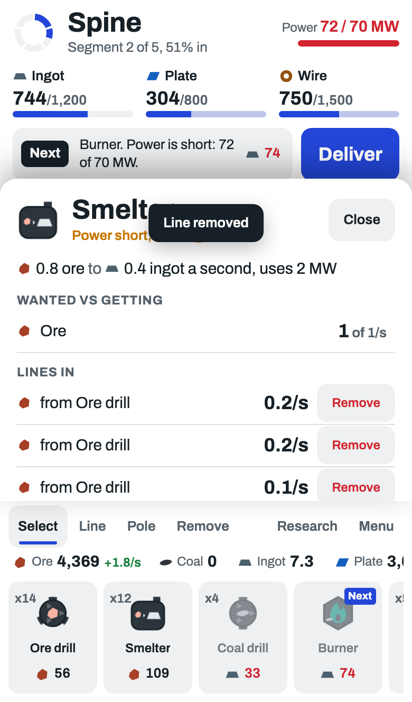
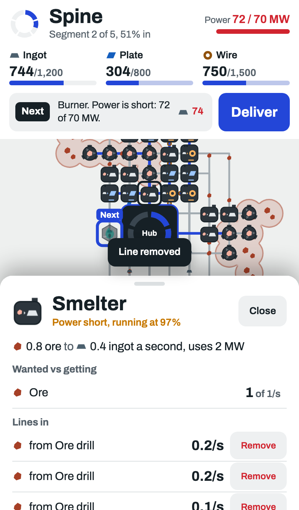
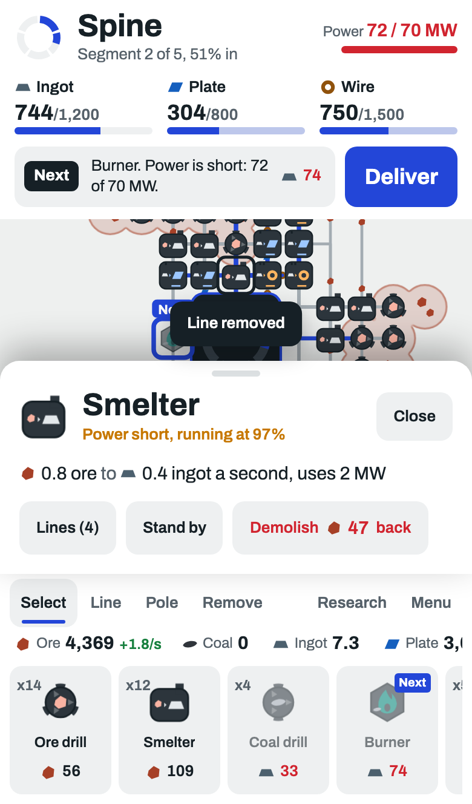

Piece 10 of 10, the last one. Done: items, machines, supply lines, ground, power, problem marks, type, top bar, machine buttons.
A phone, a smelter tapped, "Line removed" just shown. Today the panel covers the map, so you cannot see the machine you tapped, and the message lands on the panel's name.
As now. Panel fills the screen above the machine buttons. Map hidden. Message on top of the panel.

Panel slides over the machine buttons from the bottom edge. The map above keeps the tapped machine in view. Everything still in the panel, it scrolls.

Short panel: name, what it makes, and buttons. The lines move behind a Lines button. Machine buttons stay, the tapped machine stays in view.
